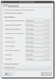

Dapper Drake
Der "Dapper Drake" ist die Ubuntu Version 6.06 LTS und damit der Nachfolger von Ubuntu 5.10 "Breezy Badger" und der Vorgänger von Ubuntu 6.10 "Edgy Eft". Der Zusatz LTS steht für „Long Term Support“ und bedeutet, dass diese Version langfristig mit Updates unterstützt wird. Konkret bedeutet das, dass diese Version, statt üblich 1,5 Jahre, drei (Desktop-Version) bzw. fünf (Server-Version) Jahre mit Updates und Bugfixes versorgt wird. Dies ist vor allem für Firmen interessant, die einfach nicht jedes halbe Jahr ein Update durchführen können, oder für Privatanwender, die keinen Wert auf die neuesten Programme legen. Man erhält dabei aber grundsätzlich nur Sicherheits- und keine Programmupdates (siehe Updatepolitik). Die nächste LTS-Version erschien am 24. April 2008 in Form von Ubuntu 8.04 Hardy Heron.
"Mark Shuttleworth, der Initiator, sprach über den deutlich gestiegenen Anspruch und bezeichnet Ubuntu 6.06 als „... äußerst stabil und zuverlässig und damit sehr geeignet für den Produktiveinsatz“. Mehrmals präsentierte er diese Ubuntu-Version als Alternative zu Microsoft Windows Vista. So ist die LTS-Version ein „Eleganter Erpel“, weil er besondere Unterstützung genießt und sehr ausgereift ist. Diese Version bildet das stolze Ende einer zweijährigen Entwicklung, die mit Warty ihren Anfang nahm. Ubuntu 6.06 läutet einen neuen, zusätzlichen Release-Zyklus ein – genannt Long Term Support." Quelle
Basisdaten¶
| Ubuntu 6.06 LTS | |
| Basisdaten | |
| Codename: | Dapper Drake |
| Deutsche Übersetzung: | Eleganter Erpel |
| Status: | nicht mehr unterstützt |
| Angekündigt am: | 14. September 2005  |
| Erschienen am: | 01. Juni 2006  |
| Unterstützt bis: | 14. Juli 2009 (Desktop) bzw. 1. Juni 2011 (Server) |
| Versionen: | Ubuntu, Edubuntu, Kubuntu, Xubuntu |
| Architekturen: | x86, PowerPC und AMD64 |
| Medien: | Alternate-CD, Desktop-CD und DVD |
| « Zeitleiste » | « Breezy Badger ... Dapper Drake ... Edgy Eft » |
Download¶
Da die Unterstützung für alle Versionen bereits abgelaufen ist, gibt es keine aktuellen Downloads mehr.
Neuerungen¶
Windows-Partitionen¶
Bei einer Neuinstallation werden inzwischen nicht nur ext2/ext3 beim Einhängen überprüft, sondern auch FAT32-Partitionen mittels fsck.vfat. Dies kann mitunter leider etwas länger dauern, stellt aber die Konsistenz der Daten sicher. Wenn dies stört, kann man die Überprüfung gemäß dieser Anleitung in der Datei /etc/fstab abschalten.
Zusätzlich werden ab sofort auch die (fast) korrekten Rechte in der Datei gesetzt, damit man als Benutzer und nicht nur als Root auf FAT32-Laufwerke zugreifen und schreiben kann. Hierfür wird mit "umask=007" und "gid=046" (Gruppe plugdev) gearbeitet. Die umask-Einstellung hat leider noch den Nachteil, dass Benutzer, die nicht in der Gruppe plugdev sind, gar nichts machen können. Hier sollte man die "umask=000" ändern, siehe auch Windows-Partitionen einbinden.
Eine weitere Änderung ist die Integration der eingebundenen Windows-Laufwerke auf dem GNOME-Desktop und in Nautilus. Bisher wurde als Bezeichnung der Name des Einbindpunktes angezeigt, also z.B. bei /media/windows_c nur windows_c. Dies hat sich geändert und es wird der unter Windows vergebene Name angezeigt oder nur Datenträger, falls kein Label vergeben wurde.
Logout-Menü¶
Das Logout-Menü ist jetzt mit kleinen Bildchen statt des minimalistisch wirkenden GTK-Auswahl-Menüs. Zusätzlich befindet sich in GNOME zum herkömmmlichen Abmelden mittels "System -> Beenden" auch noch rechts oben im Panel neben der Uhr ein Symbol, um diesen Vorgang zu beschleunigen. Außerdem ist es nun möglich den Benutzer zu wechseln, ohne die laufende GNOME-Sitzung beenden zu müssen. Dies ist ebenfalls durch den Abmelde-Dialog möglich.
Aktualisierungsbenachrichtigungen¶
Die Benachrichtigung, dass neue Updates verfügbar sind, wurde etwas überarbeitet. Ein Klick auf das Icon in der Traybar öffnet den Updatemanager.
Audioeinstellungen¶
 Der Dialog für die Audioeinstellungen wurde überarbeitet. Nun ist es möglich, für einzelne Aktionen direkt den gewünschten Klang einzustellen und die zu verwendende Soundkarte zu selektieren.
evdev¶
Die Syntax von evdev hat sich verändert. Es wird nicht mehr als "Protocol", sondern als "Driver" in die xorg.conf eingetragen. Außerdem wird die Maus nicht mehr per Angabe des entsprechenden USB-Ports, sondern über den Namen der Maus angesprochen.
Menüeinträge¶
Standardmäßig sind sehr viele Menüeinträge, wie z.B. das Root-Terminal, der Gconf-Editor, die Multimedia-Einstellungen oder OpenOffice.org-Draw deaktiviert. Diese müssen erst im Menüeditor mit einem Haken versehen werden, damit sie sichtbar sind.
Programmänderungen¶
Gdebi¶
Hiermit kann man einzelne Pakete bequem per Doppelklick installieren und muss nicht mehr in ein Terminal wechseln. Siehe auch Paketinstallation DEB.
gedit¶
gedit warnt jetzt, wenn eine Datei bereits geöffnet ist und bietet jetzt eine bessere Unterstützung für das Öffnen mehrerer Dateien durch die Verwendung von Tabs. Öffnet man aus Nautilus heraus ein Dokument, das auf einem SFTP-, FTP- oder WebDAV-Server liegt, so ist es möglich, diese Datei direkt zu editieren und zu speichern. Desweiteren ist es nun möglich, Plugins in Python zu programmieren.
Ekiga¶
Der Nachfolger von Gnomemeeting wurde von Grund auf renoviert. Ekiga bietet Internet- und Videotelephonie auf hohem Niveau. Über beliebige SIP-Anbieter lassen sich von Computer zu Computer kostenlose Gespräche oder sogar Videochats führen. Durch die Verwendung von STUN-Servern lassen sich Gespräche führen, ohne dass Ports freigeschalten werden müssen.
Evince¶
Mit Evince verfügt GNOME nun über einen Dokumentenbetrachter (für pdf, gs usw.), der die Ausgabe über Cairo rendert und somit sehr schnell das Dokument anzeigt und das in einer hervorragenden Qualität. Eine Seitenleiste mit Vorschauen aller Seiten, eine Live Suche im Dokument und ein Präsentationsmodus vervollständigen das Programm.
Mozilla Firefox und Thunderbird¶
Firefox und Thunderbird liegen nun in der Version 1.5.0.3 bzw. 1.5.0.2 vor und müssen nicht mehr separat installiert werden. Firefox wurde inzwischen auf die Version 1.5.0.4 aktualisiert. Es sieht so aus, als würde Firefox vom Ubuntu-Team immer aktuell gehalten.
OpenOffice.org¶
OpenOffice.org wird nun in der Version 2.0.2 installiert.
xchat-gnome¶
In xchat-gnome wurde die Benutzerliste aus der Anzeige entfernt und kann nun nur noch separat und temporär per Strg + U eingeblendet werden.


- Erstellt mit Inyoka
-
 2004 – 2017 ubuntuusers.de • Einige Rechte vorbehalten
2004 – 2017 ubuntuusers.de • Einige Rechte vorbehalten
Lizenz • Kontakt • Datenschutz • Impressum • Serverstatus -
Serverhousing gespendet von